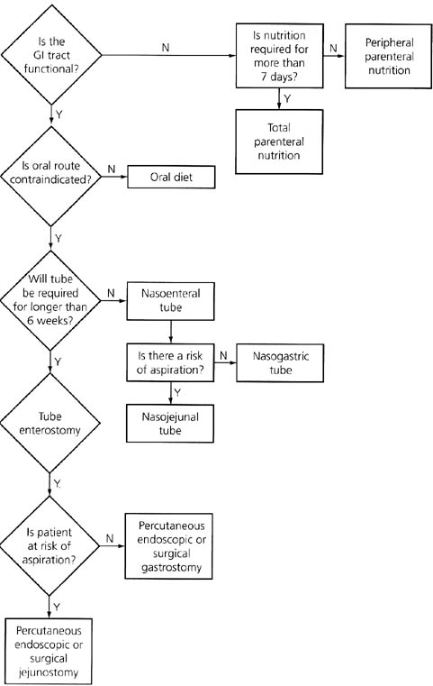

Weight
and
Nutrition
Introduction
Body composition
Nutrition Requirements
Regulating Energy Balance
Starvation
Gastrointestinal Failure
Nutrition in Injury & SIRS
Assessing Weight Change
Causes of Weight Loss
Causes of Weight Gain
Treating Nutrition Deficit
*Hill's algorithm
Introduction
Malnutrition is common in the
surgical pt.
- 50% of general surgical pts may suffer protein-energy malnutrition
(PEM) (marasmus)
- >20% wgt loss was shown to increase gastrectomy mortality (for
benign disease) by 10-fold.
- the morbidity of starvation should not be added to the sick pt.
- although NG feeds have been practiced since 1598 and jejunostomy
>100yrs ago, only recently have metabolic needs been addressed.
In many pts, eg SIRS, there may by impaired utilisation of substrates rather than
deficiency.
- only treating the underlying cause will be fully effective
Nutritional support should be
considered for every pt
- who is unable to resume adequate diet for more than 3-4 days
- and in every critically ill pt.
- response is slow: 2 weeks needed preop to address needs of a
starving pt.
- the financial costs are enormous.
Body Composition
|
70kg
male
|
60kg
fem
|
Water
|
60%
|
53%
|
Fat
|
18%
|
26%
|
Protein
|
16%
|
16%
|
Carbs
|
0.7%
|
0.5%
|
Mineral
|
5.2%
|
4.5%
|
Vits
|
trace
|
trace
|
Fat is the most variable
- change in weight acutely = hydration change.
- slower = energy / protein change.
Nutrient Requirements
|
Normal |
Stressed
|
kcal/kg/day
|
25-30
|
35-40
|
protein g/kg/day
|
1.0
|
1.3-2.0
|
- varies by weight, age, sex, activity, clinical status
- individual needs vary two or three fold.
Diets
consist of: water, fat, carbs, protein, minerals, vitamins,
trace elements, fibre.
- ie fluids/electrolytes, macronutrients, micronutrients.
- carbs supply 4.2kcal / g
- protein supplies 4.2 also, but 30% conversion cost
- lipid supplies 9.1kcal/g.
- normal adult eats 50g of protein each day
--> although some are essential and some aren't so this
requirement is not exact
When prescribing macronutrients, energy requirements parallel protein
requirements.
- elements cannot be separated.
- hence fixed ratio of supplements, eg 150 kcal/1gN
- overall requirement expressed as energy content rather than
protein content.
Diet-wise, fat should be
<35% energy intake
- however in artificial feeds, fat content is higher to reduce
osmolality
- few short term consequences
- high fat justified in stress state where it is a good oxidative
fuel and where carbs cause hyperglycaemia
Micronutrients
DEKA vitamins are
fat-soluble.
B and C are water soluble.
- in stress states, water-soluble v. requirements higher.
Beware hypokalaemia /
hypophosphataemia in refeeding the starved
- strong uptake of these elements occurs in anabolism.
Trace elements rarely
problematic except in long-term parenteral nutrition pts.
- these include zinc, copper, manganese, iodine, chromium, iron,
cobalt, selenium and molybdenum.
Regulating Energy Balance
Altering food intake or energy spent changes weight.
- usually in disease lack of food intake is dominant cause of
negative energy balance
- energy spent at rest may rise in the ill, but usually <20%
baseline.
Food intake
Altered by GI state, money, psychological, appetite and satiety
factors.
- dietary components and hormones eg insulin affect appetite.
- inflammatory mediators (IL-1, TNF) suppress weight.
- leptin recently described: protein in adipose, suppresses appetite
perhaps via altering CRH (inhibitory) to neuropeptide-Y
(stimulating) ratio in hypothalamis
- leptin influenced by diet taken and bodily adipose mass, hence
leading candidate to explain stable weight of most adults.
Starvation
Within 12 hours
- all food ingested from previous meal is likely to have been
consumed.
- plasma insulin is low, plasma glucagon rising.
- liver glycogen is the major source of brain glucose (obligate
requirement of 100g glucose per day)
- liver glycogen is converted to lactate, then moved to liver for
glucose production (Cori cycle).
--> soon after, muscle protein breakdown begins to contribute
amino acids for glucose production in the liver.
At 48 hours
Skeletal muscle, the most labile protein reserve, is rapidly
auto-cannibalizing.
- approximately 75g of muscle protein broken down each day for
hepatic gluconeogenesis.
- glycerol and trig's are broken down to make fatty acids: the main
metabolic fuel for most cells.
- a-acids in gut may also be used, leading to physiological atrophy
and gut barrier dysfunction in the critically ill.
More prolonged fasting
A series of metabolic adjustments occur to preserve body protein.
- a gradual fall in T4-->T3 conversion drops energy requirement
to around 1500 kcal/day.
- most importantly, liver begins to produce acetoacetate and
B-hydroxybuterate from fatty acids, sparing 55g/day of muscle
protein.
- "Keto-adaptation"; ketone bodies can be used as brain
fuel.
--> this is conspicuously
absent in the critically ill where there is insulin resistance.
Gastrointestinal Failure
Definition
When the functioning intestinal mass of the pt is reduced below that
minimal amount required for digestion.
Is the end result of many disorders:
- sometimes acute and reversible, eg SBO
- sometimes chronic and irreversible eg short gut syndrome
Underlying diseases
Crohn's
Pancreatitis
PUD
Mesenteric vascular disease
Malignancy
Intestinal trauma
Diverticular disease
Radiation enteritis
Clinical problems
Enteric fistula
Short-gut syndrome
Abdominal abscess
Motility disorders
Intractable diarrhoea
High-output stoma
Treatment
Parenteral nutrition is likely to be required
- as in critically ill with GI losses >1 L/day.
--> remember that in the majority the cases of ongoing ileus are
confined to just stomach and colon
--> feed with nasojejunal or jejunostomy techniques.
Nutrition in Injury &
SIRS
'Counter
regulatory'
hormone release
Noradernaline, adrenaline, GH, glucagon and cortisol increase, while
insulin falls.
- moreover the normal anabolic effects of insulin are impaired
(insulin resistance; glucose intolerance)
--> increased availability of metabolic fuels.
Metobolism
in
injury / surgery
Modest increase in metabolic rate to 2000kcal/day.
- lipid becomes the major
fuel for energy production.
- but protein breakdown and glycogenolysis and gluconeogenesis
result in more glucose availability for the brain, WBCs and healing
wounds.
- glutamine release from skeletal muscle is essential for small
intestine and immune cells.
There is no adaptive ketogenesis (due to insulin resistance)
- hence protein is rapidly cannibalized to make up for lack of
ketone body use.
--> these changes will occur despite feeding.
As the stress response wanes, insulin resistance abates
--> pt becomes anabolic.
--> eating and movement return, and muscle mass follows.
Metabolism
in
sepsis / SIRS
Complex; an exaggeration of the above (cytokines may contribute to
power of response).
- pro-inflammatory cytokines TNF-alpha, IL-1,6 and 8 important
mediators, locally and via systemic circulation.
- markedly increased metabolic rate (hypermetabolism)
- markedly increased protein breakdown (up to 250g/day)
--> visceral protein may be removed, making the gut vulnerable
- marked glucose intolerance; 'diabetes-like-state'
--> greater reliance on fat for energy production
- marked fluid retention of up to 20L (compared to just 1-2L seen
after major surgery)
Energy
requirement
These are difficult to measure and historically these pts have
received excess energy
- excess glucose administration has led to fatty liver complications
Very few pts need >2500kcal/day
- almost all can be fed adequately with 35kcal/kg body weight
--> note excess glucose (4kcal/g) can place demand on respiration
by increasing CO2 release requirement
--> hence lipid emulsions
in TPN and lipid-rich feeding solutions (up to 50% of energy is
lipid)
--> this also allows a lower volume of feed for the same energy.
--> however there are concerns that too-high lipid concentrations
may result in immune and pulmonary problems (controversial)
--> added glucose also spares protein (although this is partly
blocked in the critically ill)
No role for increased caloric delivery in the early phase of
critical illness
- 2/3 or less of normal caloric goal may be desirable; otherwise may
lead to overfeeding and harm
Early enteral feeding whenever possible
- gut barrier function, reduced sepsis, maintenance of normal GI fx.
Insulin resistance may require
insulin use
- controlling blood glucose in this way may substantially improve
prognosis and reduce infective complications.
Protein requirement
Note the necessity to supply appropriate balance of protein and
non-protein energy
- otherwise protein is inefficiently degraded into glucose
--> this is 100-120kcal of non-protein energy for each gram of
nitrogen
--> 6.25g of protein provides 1g of nitrogen.
- maintenance is 0.15g/kg/day of nitrogen
--> a depleted patient needs ~0.2g/kg/day of nitrogen
However in the SIRS/sepsis pt, this will not be utilised due to
metabolic response
--> increased urea production and nitrogen excretion
--> may lose up to 3g/kg/day of nitrogen
Although it is not possible to
balance protein in the septic pt, feed them it anyway.
- it may attenuate the negative balance.
--> treat the underlying cause and it will go away.
Trace elements
Zinc
Deficit may occur in depleted stressed patients
Causes apathy, depression, rash, diarrhoea and alopecia
100umol/day is enough.
Selenium
An antioxidant in glutathione peroxidase
Often deficient in critically ill.
If prolonged can cause irreversible cardiomyopathy
0.4umol/day is usually enough
Vitamins
Think of thiamine in the alcoholic
Vitamin C is difficult to assess but add if in doubt.
Assessing Nutrition
PEM often goes unrecognised in surgical patients
- In vivo neutron activation analysis (IVNAA) is the benchmark to
evaluate clinical nutrition assessment.
Body weight
Still the most useful objective clinical marker of nutrition
- use BMI (kg/m^2); how much, and over how long?
--> rapid = more likely organic disease
--> BMI<18.5 and/or unexplained recent loss of >10% weight
is a marker of undernutrition risk.
--> BMI<16 suggests gross malnutrition.
BMI
weight
20-25=normal
<16=gross malnutrition
>30=sig. obesity
Anthropometric
Measurements
Skinfold thickness and mid-arm circumference
--> allow estimation of fat & protein reserve
- but inaccurate in indivuals, particularly in the critically ill.
Others
Functional studies
Eg grip strength
- predictive of muscle loss
- but little clinical value.
Indirect calorimetry
- using a bedside 'metabolic cart' involving O2 / CO2 variables
- good but expensive beyond routine clinical use.
Subjective
global
assessment
A six-point scale equivalent to most sophisticated body composition
analysis or biochemical assessments of nutrient status.
Wight change: 6mo / 2wks
Dietary intake: unchanged,
suboptimal, starved
- difficult to gauge without objective diary-keeping.
- few disorders have weight loss & good appetite (eg thyrotox,
DM, steatorrhoea)
GI symptoms: anorexia,
n&v, diarrhoea
Functional capacity:
normal, suboptimal, ambulatory, bedridden
Stress: nil, minimal, high
Physical signs: loss of
fat/muscle, oedema, mucosa lesions.
Laboratory measures
Eg albumin, lymphocyte count
- indicates severity of process leading to malnutrition rather than
its degree
- eg in pure starvation, albumin does not drop until just before
death at six weeks
- vs in sepsis it can fall to 20 within 2 days (partly
redistribution)
Electrolytes / trace elements
monitoring
- this is very useful, though Na+/K+ balance may be very difficult
in the critically ill
- estimating urinary nitrogen is not useful
- other tests may be done for specific deficiencies, eg vit K, FBC
for B12 & folate
Clinical
Assessment
Careful hx and exam:
- ?early satiety, aesthenia, anaemia, oedema.
Simply determine the likelihood
they need nutritional support and provide it.
- do this twice-weekly.
Weight Loss Causes
Besides starvation, surgery and sepsis contributes a strong systemic
metabolic response that requires nutritional attention.
Malignancy
- particularly GI and lung cancer
- less common in colorectal Ca before hepatic mets
- malignant ascites may mask weight loss.
- also seen in 'B' lymphoma symptoms
- and renal adenoCa
?latter two related to pro-inflammatory cytokines.
Endocrine
- DM: ?glucose in urine
- rarely in phaeo
- thyrotoxicoses: hearty appetite
- adrenal insufficiency
GI
- persistent D&V
- gastric outlet obstruction
- gastrectomy / dumping pts.
- chronic diarrhoea eg IBD
- malabsorption eg coeliacs with steatorrhoea, being more prominent
in chronic pancreatitis
Infections
HIV
TB
Psych
Anorexia.
Weight Gain
Usually over-eating and lack of exercise
Substantial mortality associated.
Other causes should be considered, eg:
Endocrine
hypothyroidism
Cushings
Treating Nutrition Deficit
Intro
Algorithm
Enteral Feeding
Parenteral Feeding
Monitoring Feeding
Prophylactic Feeding
Make the diagnosis
Treat the underlying condition
1/3 of pts enter hospital malnourished
2/3 leave hospital malnourished.
- is the food poor quality?
- do the pts consume their food?
Indications
Any pt unable to eat for more than 3-4 days.
Algorithm

Supplementation
PO
Preferred route if GI tract is working safely.
- not good when stimulation of secretory fx undesirable, eg in
fistulae.
Easy, safe, cheap and physiologically better.
- preserves barrier function of gut
- and mass / surface area of the small bowel
- liver dysfunction, hyperglycaemia and sepsis (esp pulmonary) are
less common
Sip feeds (typically 200kcal and 2gN/200ml) are useful in anorexic
pts
- may reduce hospital stay and recovery time
--> but their use may replace
food intake
Enteral Nutritional support
Useful, relatively safe, easy and cheap, and good for gut.
Indications
Moderate-to-severe PEM with inadequate oral intake >3days
Dysphagia for all but clear fluids
Massive entercetomy
Distal enterocutaneous fistulae
After major injuyr in pts where feeding will be prolonged
Prolonged recovery
Some pts with inflammatory bowel disease
Contraindications
Complete SBO
Inadequately treated shock
Severe diarrhoea
Proximal small intestinal failure
Severe pancreatitis
Complications
(From intubation)
- fistula, infection, peritonitis, SBO, tube blockage
(From delivery)
- aspiration, intolerance, diarrhoea
Nasogastric
Easy, but gastric function is often last to recover after surgery.
--> can predispose to vomiting or aspiration; keep pt head up and
only perform if GCS adequate
- the stomach can produce up to 2.5L of secretions every day
(+receives 1500ml saliva)
- normal residual volume (balance b/n secretion and emptying &
absorption) is 50-100ml
- simply freely suctioning can lead to a large fluid loss.
--> spigotting and aspirating at 2/4/6 hr intervals will give an
indication of whether the stomach is emptying.
- if <200ml returned, the risk is fairly low.
- can commence via a wide-bore tube, but a fine-bore tube is better
toelrated once the need for drainage has passed.
Nasoduodenal/Nasojejunal
A weighted tube, best inserted during surgery.
- otherwise fluoroscopy can be used, or the 'Bengmark' tube, which
can be propelled by peristalsis
--> ensure radiography before starting feeding so as not to fill
the lung with food.
Tube enterostomy
Consider placement of an enterostomy tube in major GI surgery, eg
Whipple's, major trauma, esophagectomy.
- the Stamm and Witzel techniques are used
- the underlying bowel is sutured to the abdo wall
- percutaneous techniques are used when laparotomy is not indicated
Complications include leak and peritonitis, SBO due to tube
migration, and volvulus around the site.
Initiation
Begin gradually, but don't let it stretch out for weeks
- common problems are diarrhoea & large residuals.
--> metoclopramide can help enhance gastric emptying
A standard isocaloric (1kcal/ml) is adequate for most
--> start at 20ml/hr for six hrs, then increase by 20ml/hr for 6
hrs and so on.
--> aspirate before each increment (for gastric feeds) to check
the residual
- dilution is unnecessary and intrinsic due to gut secretions anyway
--> if villous atrophy is suspected, start lower, go slow.
Diarrhoea
Usually due to antibiotics depleting gut flora
- stop these and it will often resolve rapidly
Villous atrophy and resection and more difficult
- introducing small volume feeds early can help prevent villous
atrophy
- glutamine and arginine are critical for enterocytes; coloncytes
principally need short-chain fatty acids
--> however it is unclear if food fortified with these reduces
diarrhoea or not
Reduce risk of diarrhoea by introducing food slowly
If it does occur:
- reduce feeding to 20ml/hr
- exclude infection eg clostridium difficile (or infx in the feed
itself)
- consider jejunal feeding
- consider omeprazole in short gut syndrome (reduces gastric
hypersecretion)
- treat with loperamide
- use fibre or glutamine-containing food (unproben)
- consider IV albumin if thought to be contributing to malabsorption
(unproven)
Parenteral nutrition
Indications
Obstructions not easily fixed or who need preop nutrition
Short gut syndrome (<300cm functional small intestine)
- often need at least temporary TPN
- often adaptation will eventually permit enteral nutrition alone
- if <100cm, often need lifelong TPN
Proximal intestinal fistulae
Refractory infalmmatory disease of the GI tract
Inability to use the GI tract for other reasons
Administration
A peripheral fine bore cannula can be used for short periods
- eg a 22g changed every 24 hours.
--> high incidence of thrombophlebitis
- reduced by ensuring that hypertonic glucose is kept low, and by
adding heparin and hydrocortisone.
--> venodilation by a GTN patch over the vein can also work.
Better to use a dedicated line at the sublavian (lower infection
rate) or jugular, tunneleled to position
- ensuring tip in distal SVC ensures maximal mixing and reduces
thrombosis rate
- avoid the femoral vein, as line complications are high.
--> maintain a high degree of suspicion in the pt who develops
signs of infection or deterioration without a clear explanation
--> infection rate should be <6%
Needs to be given at least 10d pre-op in malnourished for any
benefit to be seen.
Complications
(Catheter related)
- blockage, thrombosis, migration, fracture, dislodgement,
infection, sepsis, endocarditis
(Metabolic)
- hyperglycaemia, deranged LFTs (?why / ?fat deposition),
hypoglycaemia, hyertrigylceridaemia, hyperchloraemic acidosis (too
much Cl added)
Solution choice
Most hospitals have ready compounded big-bags
- provide calorie/nitrogen balance and lipid/glucose combination
- should be 50% lipid, lipid is added last
- substances such as Ca++ and Mg++ can cause 'cracking' of the
emulsion. Avoid.
Infuse via a pump, usually continuously over 24 hrs.
Novel substrates
Glutamine, arginine, RNA, branched-chain amino acids, omega-3 fatty
acids are under research
Clinical results of benefit are awaited.
Monitoring
Manage the ABCs / sepsis firts, nutrition is not immediately
necessary.
It is exceedingly difficult to measure the nutritional status of the
critically ill
- weight changes more often reflect fluid sequestration
- changes in proteins can better reflect teh underlying process
The techniques above may help.
Daily (if stable)
FBC, glucose
Urea, creatinine, electrolytes
Weekly (if stable)
Mg++, Ca++, PO4-
Cl-, Albumin
Bilirubin & LFTs
Prothrombin time
Twice-monthly (if stable)
B12 and folate
Iron studies
Cu++, Zn++, selenium
Prealbumin, transferrin
Prophylactic Feeding
Few scientific dat supports perioperative feeding
- TPN increases morbidity
in pts with mild-moderate malnutrition
--> only markedly malnourished pts should get TPN
Even enteral feeding is not required for shorter than 7 day fasts
for most patients
Pts with active infection will not benefit from preoperative
feeding.
References
CCrISP Manual
Toouli